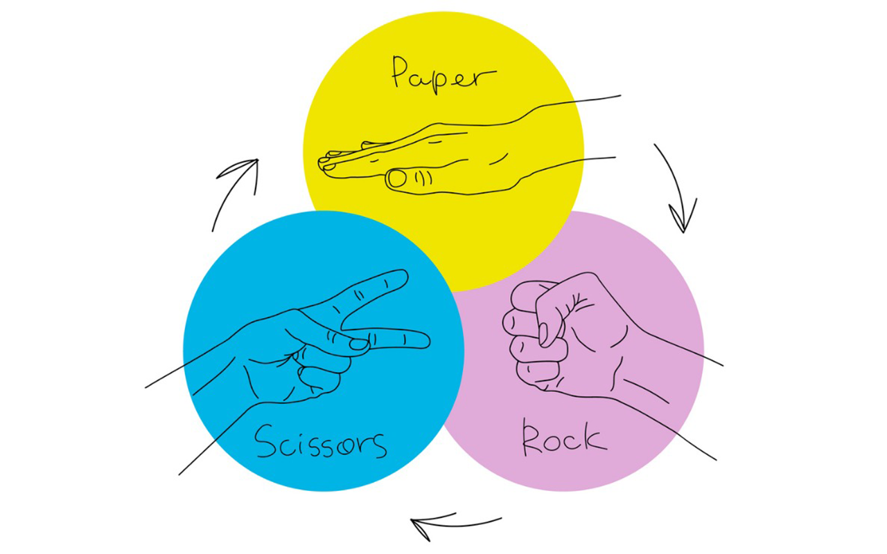

class: center, middle, title-slide count: false  .less-line-height[ Alejandro Serrano @ ZuriHac 2022 .grey[🐦 @trupill - 🐈⬛ serras - 👨💻 Tweag] ] --- # 🥅 Overall goal ### .grey[How do we build software with Haskell?] 1. ~~Domain-specific languages <br /> Representing actions and scripts <br /> Property-based testing~~ 2. Communicating over the network <br /> Serialization (without boilerplate) <br /> Resource and error handling <br /> Concurrency across threads --- # 🃏 Overall goal ### .grey[Build an interactive card game] 1. Represent the cards and the actions 2. Communicate different clients <table> <tr> <td style="vertical-align: top"><img src="img/pikachucard.png" width="100%" /></td> <td width="82%" style="padding-left: 20px; line-height: 1.3;"> <h3 style="margin-bottom: -20px"><img src="img/pikachu.png" width="32px" /> Pokémon Trading Card Game</h3> <p>Goal: knock out 6 of your opponent's Pokémon using attacks</p> </td> </tr> </table> --- # 🃏 Overall goal ### .grey[Build an interactive card game] 1. Represent the cards and the actions 2. Communicate different clients <table> <tr> <td style="vertical-align: top"><img src="img/pikachucard.png" width="100%" /></td> <td width="82%" style="padding-left: 20px; line-height: 1.3;"> <h3><img src="img/pikachu.png" width="32px" /> Pokémon Trading Card Game</h3> <h2>Waaaay too complex for 1.5h!</h2> </td> </tr> </table> --- # 🪨 Rock 🧻 Paper ✂️ Scissors <div style="margin-top: -20px"> </div>  --- # 🪨 Rock 🧻 Paper ✂️ Scissors <div style="margin-top: -20px">☁️ in the cloud</div> --- # ☁️🪨🧻✂️ Cloudy RPS ☁️ Central server which processes requests 1️⃣ Player #1 joins and gets a code 2️⃣ Player #2 joins the session using that code 🪨🧻✂️ Players play RPS as much as they want - The server receives the choices and sends the winner to both players --- # 📚 Our stack <img src="img/haskell-rainbow.gif" height="40px" /> Haskell (of course) `network-simple` for networking `binary` and `aeson` for serialization `stm` for concurrency --- # 🎲 Dice roll in the cloud 🔢 Client requests a roll of _n_ faces ☁️ Server returns a random value <img src="img/random_number.png" width="80%" /> .smaller[.little-margin-top[ _(mandatory XKCD strip)_ ]] --- # 💬 Greeting in the cloud --- 1. Build a server for dice rolls 2. Learn how to serialize 3. Async server for RPS - First connect and get a code - The other person gets a code too 4. Handle exceptions and resources - Disconnection of the other --- class: center, middle, title-slide # 🤩 It's been a pleasure ## Enjoy the rest of ZuriHac!